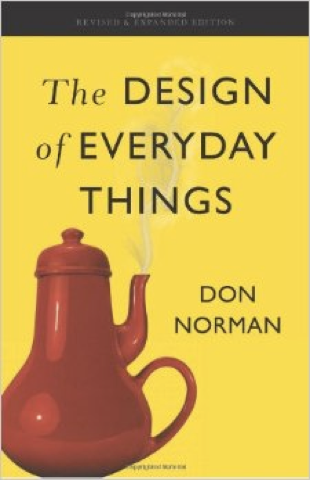
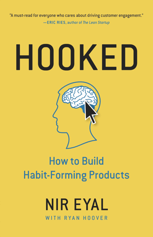
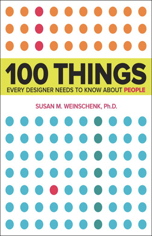
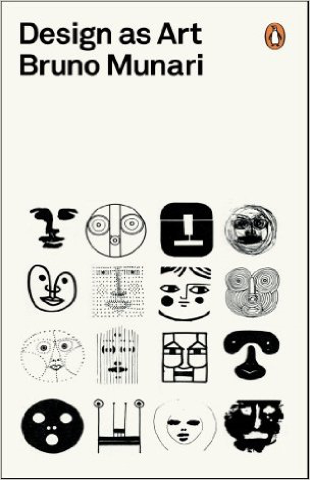
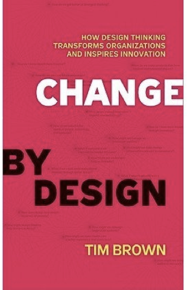
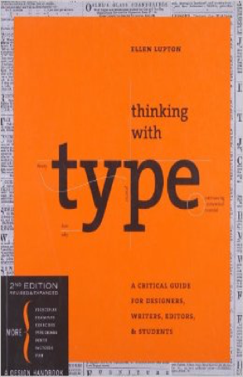
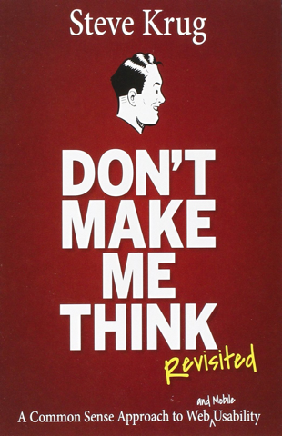

Books that are bound to transform the way you perceive design

The Design of Everyday Things
The Design of Everyday Things is a best-selling book by cognitive scientist Donald Norman about how design serves
as the communication between object and user.

Hooked- How to build habit forming products
Nir Eyar masterfully weaves his insights of technology,business and psychology into his four-fold model
which explains how to create habit-forming products.

100 Things Every Designer Needs to Know About People
If you want to design intuitive and engaging websites, apps, print materials, thne you need to know the
psychology that underlies people's behavior which is perfectly illustrated.

Design as Art
Bruno Munari's design as art is an illustrator journey into the artistic possibilities of modern design
and establishes the long-lost contact between art and the public, between living people and art as a living thing.

Change By Design
Change by Design is not a book by designers for designers; this is a book for creative leaders who seek
to infuse design thinking into every level of an organization,product or service to drive new alternatives for business.
Thoughts On Design
Paul Rand was an American graphic designer,best known for his corporate logo designs and he articulates the pioneering
vision that all design should seemlessly integrate form and function.

Thinking with Type
This is the definitive guide to using typography in visual communication. It contains many images
of type designed in various ways, integrated wih descriptive text to demonstrate various principles of typography.
Predictably Irrational
Dan Ariely explains through a series of experiments how the human mind is predictable even in its irrational
behaviour. Insights from this book will help you understand your user's decisions better.

Don't make me think
Steve Krug highlights a common sense approach to web usability.A must-read for anyone involved in designing,
managing or developing web projects.